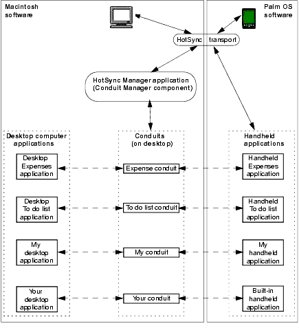

|
|
|
C/C++ Sync Suite Companion for Macintosh Palm OS® Conduit Development Kit for Macintosh, Version 4.03 The HotSync Manager Application |
This chapter provides an overview of how different software and hardware components fit into the world of software development for the Palm OS® platform, and how conduits fit with those components. Palm OS Platform ConnectionsUsers connect Palm Powered™ handhelds and use HotSync® technology to perform the following operations: • to synchronize data stored on the handheld with data stored on the desktop computer • to back up data stored on the handheld to the desktop computer • to install new handheld applications that have been stored on the desktop computer The handheld features a processor that is significantly slower than the processors on most desktop computers. Because of this, PalmSource encourages developers to write applications for the Palm OS platform that off-load the processor-intensive tasks to the desktop computer. Specifically, handhelds are intended for applications such as the following: • portable data entry • portable data viewing • remote transactions And applications that perform the following operations are considered more suitable for the desktop computer's processing power: • high volume data entry • backing up data • printing • configuration • data storage Figure 2.1 shows the relationship between the desktop computer and handheld. Figure 2.1 Palm OS platform connections
The HotSync transport component manages communications between the desktop computer and the handheld. This is true regardless of how the two are communicating. There are three communication connection types available: • direct cable connection • modem connection • network connection The software on the desktop computer that communicates with the handheld is the HotSync Manager application. This program is described in Chapter 3, "How the HotSync Manager Application Works with Conduits." The HotSync Manager application uses the communications API to handle the actual sending and receiving of bytes to and from the handheld, which makes the HotSync Manager application independent of the connection type. And since conduits use the HotSync transport to send and receive data, conduit code is completely independent of the communication connection type. Software ComponentsThere are four software components involved in using a handheld: • Desktop applications, which are developed by you or another developer, run on the desktop computer and operate on data that is sent to and/or retrieved from the handheld. • Palm OS applications developed by Palm OS developers that run on the handheld. These are also referred to as handheld applications. • The HotSync Manager application, which is supplied by PalmSource, Inc., runs on the desktop computer and communicates with the handheld. The HotSync Manager application's Transport Monitor component awakens when the user initiates synchronization operations, and passes control to the Conduit Manager component, which calls each of the conduits that have been loaded onto the user's desktop computer. • Conduits are the shared libraries that the HotSync Manager application activates to interact with specific data on the handheld. You use the Conduit Development Kit to create conduits. Figure 2.2 shows the process flow through these components. Figure 2.2 Palm OS platform process flow

Desktop ApplicationsDesktop applications of various kinds can exchange data with handhelds. These are standard desktop computer applications that either share data with a handheld application or have a data entry component that runs on the handheld. For example, the Palm Desktop software shares date book, address, memo, and to-do data with the built-in handheld applications. Handheld ApplicationsHandheld applications are either the built-in applications or third party programs that have been installed on the handheld. Developers create applications for Palm Powered handhelds using various development environments, as described in PalmSource developer documentation, including the Palm OS Programmer's API Reference and Palm OS Programmer's Companion books. The HotSync Manager ApplicationThe HotSync Manager application oversees the process of synchronizing a handheld with a desktop computer. The HotSync Manager application runs in the background on the user's computer, monitoring a communications port for the signal to begin synchronizing. When the HotSync Manager application receives that signal, it initiates the synchronization process and then calls the conduits that have been installed on the user's desktop computer. Each conduit performs its own synchronization operations. IMPORTANT: The ability to quickly synchronize data between the desktop computer and the handheld is fundamental to the Palm OS platform philosophy. For more information about the HotSync Manager application, see Chapter 3, "How the HotSync Manager Application Works with Conduits." ConduitsA conduit is a plug-in module for the HotSync Manager application that transfers a specific kind of data between the handheld and the desktop computer. Some applications create or use data that must be shared with data on a desktop computer. For example, the built-in date book application exchanges data with the Palm Desktop software that runs on the user's desktop computer. The date book conduit synchronizes the date book databases on the desktop computer and handheld. Other applications create data that is backed up onto the desktop computer. The backup conduits copies the data from the handheld to the user's desktop computer. IMPORTANT: Conduits must operate without user interaction so that users can press the HotSync button on the handheld cradle and have data synchronized without any required intervention. This is especially important for users who are synchronizing remotely and cannot interact with the desktop computer. For more information about conduits, see Chapter 4, "Developing Conduits." Conduit DevelopmentYou can develop conduits with the Palm CDK for Macintosh in C/C++ with Metrowerks CodeWarrior running on Mac OS 9 or Mac OS X. (See "Conduit Development Environments" for supported CodeWarrior versions.) Figure 2.3 shows the software components involved with developing a conduit. Figure 2.3 Synchronization software components
Conduit Entry PointsThe HotSync Manager application calls several entry points in a conduit, including the OpenConduit function, which allows the conduit to perform its tasks. A conduit must provide some of these entry points and can optionally provide others. For more information about the required and optional entry point functions, see Chapter 7, "Interfacing with the HotSync Manager Application." The Conduit Information ResourceMacintosh conduits use a conduit information ('CInf') resource to specify certain conduit characteristics, including the name and version number of the conduit. You need to include a conduit information resource for your conduit. This resource is described in Chapter 9, "Installing Conduits." The Sync Manager APIThe Sync Manager API is the programmatic interface for communicating with the handheld. Conduits call functions in this API to send data to and receive information from the handheld. For more information about the Sync Manager API, see Chapter 6, "Using the Sync Manager API." The Generic Conduit FrameworkRather than relying directly on the Sync Manager API, you can develop your conduit using the Generic Conduit Framework (GenCn). GenCn is a generic conduit, based on C++ classes that you can override to implement your own functionality. For more information about Generic Conduit, see Chapter 5, "Generic Conduit Framework." The User Manager APIIf you're developing a desktop application that needs to look up or change information about HotSync users, such as their name, synchronization settings, and so forth, you can use the User Manager API to accomplish these tasks. For more information about the User Manager API, see Chapter 6, "User Manager API,". Carbonization and Mac OS XCDK 4.0.3 supports development of conduits that will work with HotSync Manager on both Mac OS 9 and Mac OS X. To do this, your conduit must be written to Apple's Carbon API. Carbon is a subset of the classic Mac OS API that is available for both Mac OS 9 and Mac OS X applications. For the most part, the functions eliminated in Carbon are obsolete and redundant. CarbonLibDeveloping conduits requires linking against Apple's CarbonLib 1.5 or later. You can download the latest version of CarbonLib at: http://developer.apple.com/sdk/index.html Updating an Existing ConduitUpdating an existing conduit to work with HotSync Manager 3.0 is a fairly straightforward process. CarbonizingThe first step to updating ("Carbonizing") an existing conduit to work under both Mac OS 9 and Mac OS X is to download and use Apple's Carbon Dater utility, which will examine your existing conduit and create a report indicating what changes are needed in order to make it Carbon-compliant. Carbon Dater and the corresponding documentation can be found at: http://developer.apple.com/carbon/dater.html Once you've identified which Mac OS functions you're using that are no longer supported in Carbon, you can update your code. NOTE: Your conduit must have either a 'carb' or 'plst' resource of ID 0 in order to be recognized as a Carbonized conduit. Read Apple Technical Note 2013 at http://developer.apple.com/technotes/tn/tn2013.html for details. Updating the Conduit Info ResourceYou also need to update your conduit info ('Cinf') resource to indicate a resource version of at least 0x0300 in order to be loaded by HotSync Manager on Mac OS X. Updating the User InterfaceIf your conduit has a dialog box for ConfigureConduit, you should take whatever steps are needed to bring it into line with Apple's Aqua Human Interface Guidelines. For details on these guidelines, visit: http://developer.apple.com/techpubs/macosx/Essentials/AquaHIGuidelines/index.html BundlingIf you choose to distribute your conduit as a bundle, you also need to replace your OpenConduit, GetConduitName, and other functions with the new Carbon versions, such as OpenConduitCarbon and CopyConduitNameAsCFStringRef. For details on bundling, see Inside Mac OS X: System Overview: http://developer.apple.com/techpubs/macosx/Essentials/SystemOverview/index.html Updating the InstallerYour conduit's installer needs to be updated not to use the Install Aide API, which has been deprecated. Instead, you need to use the User Manager API. See Chapter 6, "User Manager API," for details on this API. BundlesA bundle is a directory following a particular structure that groups executable files and resources together into a unit. The resources can include any form of data, including entire text files, graphics files, sounds, and so forth. The most common use for bundles in a conduit is to provide support for multiple languages and locales. Your conduit can simply include resources for multiple locales in its bundle, and the conduit will automatically be localized to the user's locale when the conduit is loaded. Details on the structure of a bundle are beyond the scope of this documentation, but the key to localization is to create Language.lproj directories within your bundle's Resources directory; each of these directories should contain the resources for the specified language. For example, if your conduit is localized for US English and Japanese, you would include directories called en_US.lproj and Japanese.lproj. NOTE: The localization directories in your bundle can have generic names if the region is unimportant (like English.lproj if you don't have separate US and UK English versions). Otherwise, your localization directory names are comprised of the ISO 3166 standard country code, an underscore, and the ISO 639 standard for language code. Visit http://www.iso.ch for a complete list of these codes. The resources contained in your bundle's language resource directories would minimally need to include a localized version of your conduit's user interface .nib file and any text files contained in your bundle (such as help files displayed from within your conduit). Graphics files that contain textual data, such as splash screens, would possibly also be localized and contained within your language-specific resource directories. For details on bundling, see Inside Mac OS X: System Overview: http://developer.apple.com/techpubs/macosx/Essentials/SystemOverview/index.html Carbon DocumentationApple provides extensive documentation about Carbon on its web site: http://developer.apple.com/techpubs/macosx/Carbon/carbon.html Apple's Carbon site provides not only documentation, but tools, technical notes, sample code, and links to purchase printed manuals. |
|
|